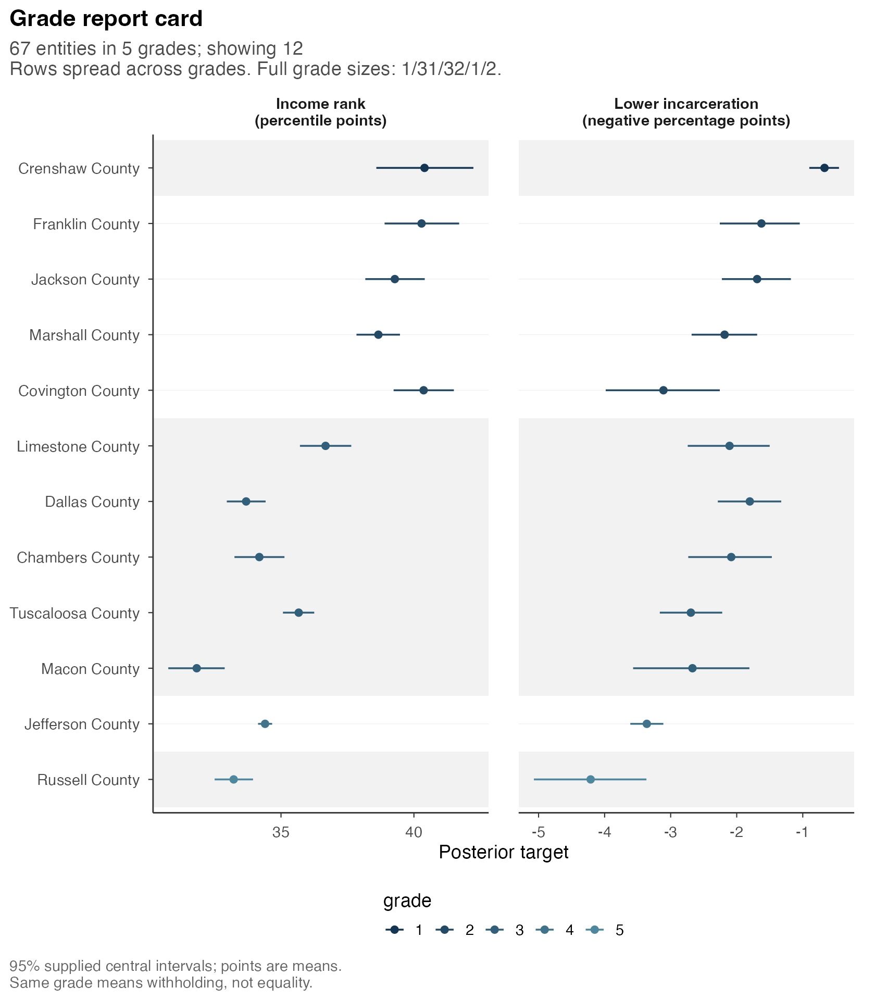
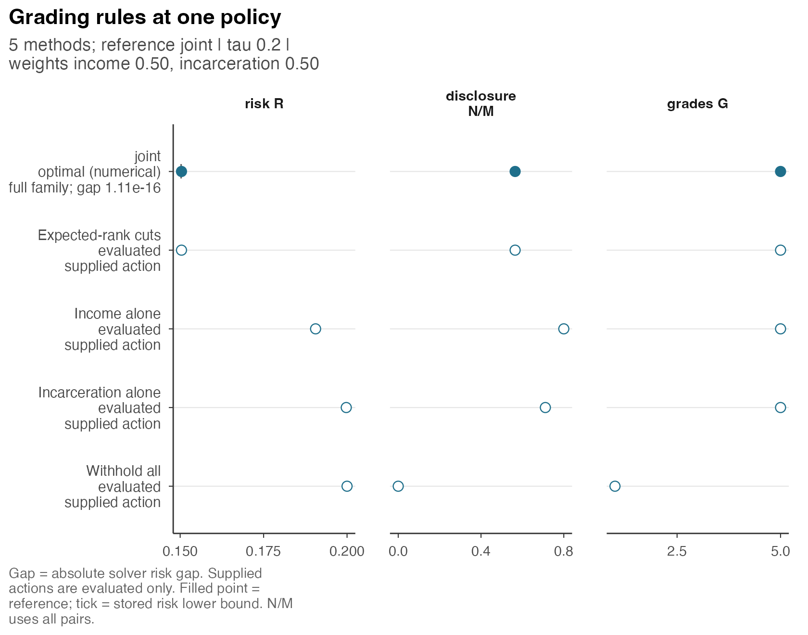

Grading Alabama counties on income and incarceration
Source:vignettes/a4-alabama-opportunity.Rmd
a4-alabama-opportunity.RmdGrading geographic areas on multiple socioeconomic outcomes requires
a common ordering rule even when two outcomes rank areas differently or
differ in precision. Here we grade all 67 Alabama counties
across adult household income rank and adult incarceration rate using
pr_case_alabama, then compare that shared grading against
separate single-outcome gradings.
Higher priority (grade 1) corresponds to more favorable historical cohort outcomes: higher adult income and lower incarceration (rather than greater funding need). Sharing a grade leaves two counties unordered without claiming equal outcomes. All posterior inputs and optimization results below are stored in the package and loaded without fitting a model or running a solver during rendering.
Cohort, outcome dates, and source license
pr_case_alabama is adapted from Chetty, Friedman,
Hendren, Jones, and Porter (2022), Replication Data for: The
Opportunity Atlas: Mapping the Childhood Roots of Social Mobility
(Harvard Dataverse V1.0, doi:10.7910/DVN/NKCQM1;
source: Opportunity Insights and the U.S. Census Bureau), distributed
under CC BY
4.0 (no endorsement by the original authors or agencies is implied;
see ?pr_case_alabama and the installed
DATA-NOTICE.md).
The observations describe children born in 1978-1983
whose parents were at the 25th national income percentile, pooled across
race and gender, across all 67 Alabama counties (2010
Census county boundaries; every county has both published estimates and
positive standard errors):
-
Adult income (
income): mean household income percentile rank (0to100percentile points), measured from2014-2015tax records. -
Incarceration (
incarceration): percentage residing in a correctional facility onApril 1, 2010(a single-day Census snapshot rather than lifetime incarceration or current crime; see the Opportunity Atlas codebook).
These historical conditional outcomes do not identify the causal
effect of growing up in a county or of changing local policy today.
Below are four example counties from alabama$units before
posterior shrinkage:
show <- match(c("Baldwin County", "Coosa County", "Crenshaw County",
"Russell County"), alabama$units$county_name)
observed <- alabama$units[show, c("county_name", "income_estimate_points",
"income_se_points", "incarceration_estimate_points",
"incarceration_se_points")]
knitr::kable(observed, row.names = FALSE, digits = 2,
col.names = c("County", "Income rank", "Income SE",
"Incarceration (%)", "Incarceration SE"))| County | Income rank | Income SE | Incarceration (%) | Incarceration SE |
|---|---|---|---|---|
| Baldwin County | 38.88 | 0.36 | 2.26 | 0.25 |
| Coosa County | 35.27 | 0.96 | 5.45 | 1.13 |
| Crenshaw County | 40.95 | 1.01 | 0.42 | 0.14 |
| Russell County | 33.12 | 0.37 | 4.49 | 0.44 |
Published standard errors already combine sampling error and Census privacy noise, so they enter the observation model once without adding a second privacy variance; the published cohort-count column is descriptive rather than a binomial denominator or loss weight.
Separate posterior models and target orientation
Each outcome was fitted separately across the 67 Alabama
counties using a Gaussian observation likelihood around a
logistic-normal county random effect. The logit-scale intercept had a
normal prior with standard deviation 1.5 and mean
qlogis(0.40) for income or qlogis(0.03) for
incarceration. The between-county logit standard deviation had a
half-normal prior with scale 1. To align priority
directions so larger values mean more favorable outcomes on both
criteria, income is 100 times the latent
income rank fraction (percentile points) and incarceration
is -100 times the latent incarceration probability
(negative percentage points, so -1 ranks above
-4).
alabama$input is a postrank_probabilities
object built from MCMC pool A (the primary 16,000-draw MCMC
run per criterion in the source study, compared with a second
8,000-draw MCMC run, pool B, in the final section), storing
the 67 x 67 x 2 directional-error probabilities together
with 95% equal-tail marginal intervals (level = 0.95).
Fitting the two criteria separately preserves within-criterion
cross-county dependence and suffices for the additive weighted loss
below, while leaving joint simultaneous-improvement probabilities and
raw MCMC chains unavailable:
posterior_means <- postrank_posterior_means(alabama$input)
data.frame(
County = alabama$units$county_name[show],
round(posterior_means[show, ], 2),
row.names = NULL
)
#> County income incarceration
#> 1 Baldwin County 38.85 -2.23
#> 2 Coosa County 35.53 -3.84
#> 3 Crenshaw County 40.40 -0.67
#> 4 Russell County 33.22 -4.21Two-criterion loss, grades, and criterion error rates
In this example, we weight directional errors on income
and incarceration equally (0.5 and
0.5), set the unordered-pair cost to
tau = 0.20, and allow up to G_max = 5
grades:
settings <- postrank_settings(
weights = c(income = 0.5, incarceration = 0.5),
tau = 0.20, G_max = 5L
)Equal weights average the directional-error probabilities across the
two criteria rather than adding income percentile points to
incarceration percentage points. Recomputing the grading requires a
solver (Gurobi is the default and needs a license;
backend = "highs" uses highs from
install.packages("highs")). The solver call is shown below
with eval = FALSE, and the stored result from an equivalent
call is loaded with postrank_example():
common <- postrank(
alabama$input, settings = settings, level = 0.95,
backend = "highs",
control = postrank_control(time_limit = 30, threads = 1L, seed = 1304L),
fragility = FALSE
)
common <- postrank_example("case_alabama67")
common
#> <postrank_analysis> 67 entities in 5 grades (sizes 1 / 31 / 32 / 1 / 2)
#> 2 criteria: income, incarceration.
#> Posterior loss: 0.1504.
#> Disclosed 1249 of 2211 pairs (56.5%); withheld 962.
#> Expected error among disclosed pairs: income 0.052; incarceration 0.172.
#> Solver: Optimal within solver tolerances.
#> Optimization gap: 1.11e-16; requested absolute gap 1e-08.
#> Prepared: report card.
#> Grade 1 has highest priority; a shared grade withholds the comparison.
#> 67 entities; membership in get_grades(x)
#> i summary(x) explains the loss, settings and bounds; get_grades(x) returns
#> all grades.The common grading uses all 5 permitted grades
(1 / 31 / 32 / 1 / 2 counties), ordering 1,249
of the 2,211 county pairs (56.5%) and leaving
962 pairs unordered, with loss 0.150394
compared with 0.200000 for leaving all pairs unordered:
grades <- get_grades(common)
grade_sizes <- as.data.frame(table(grades), stringsAsFactors = FALSE)
names(grade_sizes) <- c("Grade", "Counties")
knitr::kable(grade_sizes, row.names = FALSE)| Grade | Counties |
|---|---|
| 1 | 1 |
| 2 | 31 |
| 3 | 32 |
| 4 | 1 |
| 5 | 2 |
profile <- get_profile(common)
knitr::kable(profile[, c("criterion", "E", "E_over_N", "risk")],
digits = 4, row.names = FALSE,
col.names = c("Criterion", "Expected wrong directions",
"Errors per ordered pair", "Criterion loss"))| Criterion | Expected wrong directions | Errors per ordered pair | Criterion loss |
|---|---|---|---|
| income | 64.9662 | 0.0520 | 0.1164 |
| incarceration | 215.2747 | 0.1724 | 0.1844 |
Across the 1,249 ordered pairs, expected wrong-direction
errors per ordered pair are 5.2% (0.0520) on
income and 17.2% (0.1724) on
incarceration. The solver finished with status
"optimal" and optimization gap 1.11e-16, which
measures agreement between the checked grading and the solver’s lower
bound on the pool-A probability array rather than Monte Carlo or model
uncertainty.
Report card for selected counties
To keep county labels readable, max_rows = 12 displays
12 counties spanning all 5 grades (all
67 counties enter the optimization and remain in
as.data.frame(common); pass max_rows = NULL on
a tall canvas to plot every county):
units_df <- alabama$units
county_names <- setNames(units_df[["county_name"]], units_df[["entity_id"]])
postrank_plot_report_card(common, max_rows = 12,
entity_labels = county_names,
criterion_labels = c(
income = "Income rank\n(percentile points)",
incarceration = "Lower incarceration\n(negative percentage points)"
)
)
Open full-size figurePosterior means and 95% equal-tail marginal intervals on adult income rank and negated incarceration rate for 12 selected Alabama counties across grades 1 to 5.
Crenshaw County ("01041") is the sole
county in grade 1, with posterior mean adult income rank
40.4 percentile points and posterior mean incarceration
rate 0.67% (-0.67 on the negated scale).
Montgomery County ("01101") and
Russell County ("01113") share grade
5, so their mutual comparison is left unordered. Horizontal
bars show 95% marginal intervals for each county’s target one county at
a time rather than simultaneous bands or intervals for the integer
grades.
To build a full 67-county membership table with names and Census FIPS codes:
membership <- data.frame(
county_id = names(grades),
county = unname(county_names[names(grades)]),
grade = unname(grades)
)
head(membership[order(membership$grade, membership$county), ], 8)
#> county_id county grade
#> 21 01041 Crenshaw County 1
#> 2 01003 Baldwin County 2
#> 5 01009 Blount County 2
#> 11 01021 Chilton County 2
#> 12 01023 Choctaw County 2
#> 13 01025 Clarke County 2
#> 14 01027 Clay County 2
#> 15 01029 Cleburne County 2Comparing expected-rank cuts and single-outcome gradings
alabama$reference$actions stores single-criterion
gradings optimized for income alone (D1) and incarceration
alone (D2), an all-unordered vector (B0), and
an expected-rank contiguous-cut rule (B3, which sorts
counties by weighted expected rank and chooses optimal contiguous
cutpoints along that fixed order). Below we evaluate all four fixed
vectors on the two-criterion loss using
postrank_compare():
comparison <- postrank_compare(common,
`Expected-rank cuts` = alabama$reference$actions$B3,
`Income alone` = alabama$reference$actions$D1,
`Incarceration alone` = alabama$reference$actions$D2,
`Withhold all` = alabama$reference$actions$B0,
baselines = character()
)
knitr::kable(comparison$table[, c("method", "risk", "N", "G")],
digits = 6, row.names = FALSE,
col.names = c("Report", "Two-criterion loss", "Ordered pairs", "Grades"))| Report | Two-criterion loss | Ordered pairs | Grades |
|---|---|---|---|
| joint | 0.150394 | 1249 | 5 |
| Expected-rank cuts | 0.150394 | 1249 | 5 |
| Income alone | 0.190573 | 1769 | 5 |
| Incarceration alone | 0.199764 | 1572 | 5 |
| Withhold all | 0.200000 | 0 | 1 |
postrank_plot_compare(comparison)
Open full-size figureTwo-criterion loss (weights 0.5/0.5, tau = 0.20, G_max = 5) on pool A for the common grading and four fixed reference gradings.
In this dataset, the unrestricted common grading (joint)
and the expected-rank cut rule (B3) produce identical
grades and pair relations (loss 0.150394,
1,249 ordered pairs), so joint mixed-integer programming
(MIP) search offers zero loss reduction beyond B3 here
(while additionally supplying an unrestricted lower bound across all
5-grade groupings). Evaluating D1
(Income alone) and D2
(Incarceration alone) on the two-criterion loss gives
0.190573 and 0.199764.
Conversely, we can evaluate how much extra single-criterion loss the
shared common grading incurs on each outcome relative to D1
and D2 on their own objectives:
single <- alabama$reference$single_criterion
single_loss <- vapply(seq_len(nrow(single)), function(i) {
crit <- single$criterion[i]
postrank_evaluate(alabama$reference$actions[[single$method[i]]],
alabama$alternatives[[crit]], weights = setNames(1, crit),
tau = 0.20)$primary_risk
}, numeric(1))
common_loss <- profile$risk[match(single$criterion, profile$criterion)]
cost <- data.frame(
Criterion = single$criterion,
Common = common_loss,
Separate = single_loss,
Difference = common_loss - single_loss,
Archived_gap = single$gap
)
knitr::kable(cost, digits = 6, row.names = FALSE,
col.names = c("Criterion", "Common loss", "Separate loss",
"Extra loss for common grades", "Separate solver gap"))| Criterion | Common loss | Separate loss | Extra loss for common grades | Separate solver gap |
|---|---|---|---|---|
| income | 0.116403 | 0.061578 | 0.054824 | 0 |
| incarceration | 0.184385 | 0.119857 | 0.064528 | 0 |
Requiring one shared grading across both outcomes adds
0.054824 expected loss on income
(0.116403 versus 0.061578) and
0.064528 on incarceration
(0.184385 versus 0.119857), for an
equal-weight average extra loss of 0.059676 (measured in
expected-loss units rather than dollars or posterior score
intervals).
Numerical replication across MCMC pools A and B
alabama$alternatives$pool_B comes from a second MCMC run
(8,000 retained draws per criterion versus
16,000 in pool A) fitted to the exact same 67 county
estimates and priors. Comparing pool A and pool B checks Monte Carlo
integration stability without adding new data:
ev_A <- postrank_evaluate(grades, alabama$input, settings = settings)
ev_B <- postrank_evaluate(grades, alabama$alternatives$pool_B,
settings = settings)
knitr::kable(data.frame(
Pool = c("A (16,000 draws)", "B (8,000 draws)"),
Fixed_report_loss = c(ev_A$primary_risk, ev_B$primary_risk),
Ordered_pairs = c(ev_A$N, ev_B$N)
), digits = 6, row.names = FALSE)| Pool | Fixed_report_loss | Ordered_pairs |
|---|---|---|
| A (16,000 draws) | 0.150394 | 1249 |
| B (8,000 draws) | 0.150342 | 1249 |
Evaluating the pool-A grading on pool B shifts the loss by
-0.000051 (0.150394 to 0.150342),
and re-optimizing on pool B in the source study changed 0
of the 2,211 pair relations
(alabama$reference$relation_stability). In the source chain
diagnostics (alabama$reference$numerical_pools), pool B’s
pairwise Monte Carlo standard errors (MCSEs) exceeded the
0.005 screen on 486 directional entries
(maximum 0.005867), while its chain-based MCSE for the
fixed grading’s aggregate loss was 0.000096
(9.62e-05, below the 0.001 target): aggregate
loss averages across 2,211 pairs and can be estimated much
more precisely than individual borderline pairs. Pairs where all
retained draws fell on one side (0 or 1
frequencies) have zero sample variance across draws (so their chain MCSE
is unavailable rather than proving posterior certainty), and agreement
between pools A and B does not validate the model on external data.
Substantive scope and data attribution
In this historical Alabama cohort, requiring one common grading
across adult income and incarceration leaves 43.5% of
county pairs unordered, agrees with expected-rank contiguous cuts, and
yields different expected error rates across the two outcomes
(5.2% versus 17.2%). Choosing between one
common grading and separate outcome-specific gradings is a policy choice
about what the report must communicate.
Data attribution: Raj Chetty, John Friedman, Nathaniel Hendren, Maggie R. Jones, and Sonya R. Porter (2022), Replication Data for: The Opportunity Atlas: Mapping the Childhood Roots of Social Mobility, Harvard Dataverse V1.0, doi:10.7910/DVN/NKCQM1; source: Opportunity Insights and the U.S. Census Bureau (county CSV), used under CC BY 4.0. Adaptations include filtering to Alabama, adding county identifiers and names, scaling units and negating incarceration, fitting separate hierarchical models, and extracting compact pairwise probabilities and 95% intervals; no endorsement by the original authors or agencies is implied.
Where next
- For a smaller introductory example, see Getting started: grading with one or two criteria.
- To prepare inputs from your own MCMC fits, read Preparing your posterior draws and comparison probabilities.
- To export tables and customize plots, read Reading and exporting grading results and Figures and sensitivity to reporting settings.
- For the theory of posterior probability inputs and Monte Carlo precision, see Posterior representations and pairwise comparison probabilities and Monte Carlo diagnostics, cross-fitting, and IID bounds.